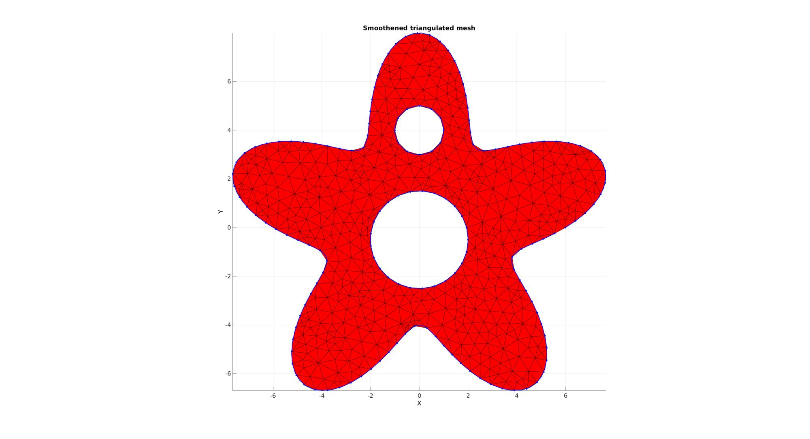

regionTriMeshRand2D
Below is a basic demonstration of the features of the regionTriRandMesh2D function.
Contents
clear; close all; clc;
SIMULATING BOUNDARY CURVES
%Boundary 1 ns=150; t=linspace(0,2*pi,ns); t=t(1:end-1); r=6+2.*sin(5*t); [x,y] = pol2cart(t,r); V1=[x(:) y(:)]; %Boundary 2 [x,y] = pol2cart(t,ones(size(t))); V2=[x(:) y(:)+4]; %Boundary 3 [x,y] = pol2cart(t,2*ones(size(t))); V3=[x(:) y(:)-0.5];
CREATING A REGION MESH
The input variable regionCell is a cell array containing all the boundary curves, e.g. for a two curve region 1 we would have something like regionSpec{1}={V1,V2} where V1 and V2 are the boundary curves. Multiple curves may be given here. The first curve should form the outer boundary of the entire region, the curves that follow should define holes inside this boundary and the space inside them is therefore not meshed. All the above is similar to the regionTriMesh2D function. Additional inputs can be provided here such as SD which is the X and Y standard deviation for random point offsets following seeding of points. Hence a semi-random point spacing and triangulation is obtained. The mesh is still smoothened though which gives points their final locations.
%Defining a region regionCell={V1,V2,V3}; %A region between V1 and V2 (V2 forms a hole inside V1) plotOn=1; %This turns on/off plotting %Desired point spacing pointSpacing=0.5; resampleCurveOpt=1; SD=[0.2 0.2]; [F,V,C,DT]=regionTriMeshRand2D(regionCell,pointSpacing,SD,resampleCurveOpt,plotOn); plotV(V1,'b-','LineWidth',2); plotV(V2,'b-','LineWidth',2); plotV(V3,'b-','LineWidth',2); axis tight;

GIBBON www.gibboncode.org
Kevin Mattheus Moerman, gibbon.toolbox@gmail.com
GIBBON footer text
License: https://github.com/gibbonCode/GIBBON/blob/master/LICENSE
GIBBON: The Geometry and Image-based Bioengineering add-On. A toolbox for image segmentation, image-based modeling, meshing, and finite element analysis.
Copyright (C) 2019 Kevin Mattheus Moerman
This program is free software: you can redistribute it and/or modify it under the terms of the GNU General Public License as published by the Free Software Foundation, either version 3 of the License, or (at your option) any later version.
This program is distributed in the hope that it will be useful, but WITHOUT ANY WARRANTY; without even the implied warranty of MERCHANTABILITY or FITNESS FOR A PARTICULAR PURPOSE. See the GNU General Public License for more details.
You should have received a copy of the GNU General Public License along with this program. If not, see http://www.gnu.org/licenses/.